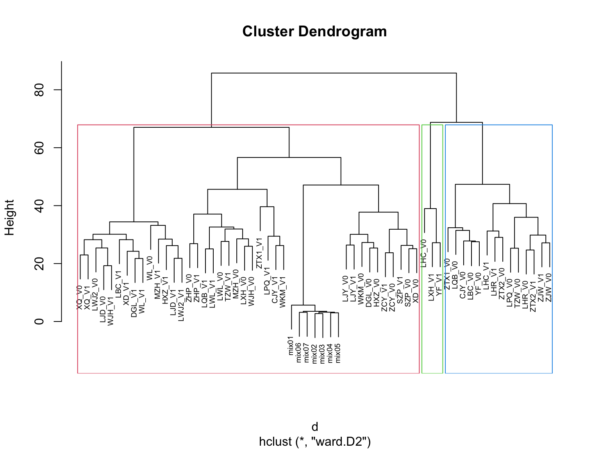

Chapter 5 MetOrigin Analysis
Microbiome and its metabolites are closely associated with human health and diseases. However, it is challenging to understand the complex interplay between microbiome and metabolites. MetOrigin is a bioinformatics tool, aiming to identify which bacteria and how they participate in certain metabolic reactions, helping us to understand where metabolites come from: host, bacteria, or both?
The tutorial was from https://metorigin.met-bioinformatics.cn/home/. Here, we gave example for how to prepare inputs to MetOrigin website.
5.2 Importing data
The dataset is from the Zeybel-2022 published paper (Zeybel et al. 2022).
5.3 Differential Analysis
Fold change (group1 vs group2)
- RawData
VIP (Variable influence on projection & coefficient)
Variable influence on projection (VIP) for orthogonal projections to latent structures (OPLS)
Variable influence on projection (VIP) for projections to latent structures (PLS)
T-test
- significant differences between two groups (p value)
Merging result
Foldchange by Raw Data
VIP by Normalized Data
test Pvalue by Normalized Data
FoldChange <- function(
x,
group,
group_names) {
# dataseat
metadata <- SummarizedExperiment::colData(x) %>%
as.data.frame()
profile <- SummarizedExperiment::assay(x) %>%
as.data.frame()
colnames(metadata)[which(colnames(metadata) == group)] <- "CompVar"
phenotype <- metadata %>%
dplyr::filter(CompVar %in% group_names) %>%
dplyr::mutate(CompVar = as.character(CompVar)) %>%
dplyr::mutate(CompVar = factor(CompVar, levels = group_names))
sid <- intersect(rownames(phenotype), colnames(profile))
phen <- phenotype[pmatch(sid, rownames(phenotype)), , ]
prof <- profile %>%
dplyr::select(all_of(sid))
if (!all(colnames(prof) == rownames(phen))) {
stop("Wrong Order")
}
fc_res <- apply(prof, 1, function(x1, y1) {
dat <- data.frame(value = as.numeric(x1), group = y1)
mn <- tapply(dat$value, dat$group, function(x){
mean(x, na.rm = TRUE)
}) %>%
as.data.frame() %>%
stats::setNames("value") %>%
tibble::rownames_to_column("Group")
mn1 <- with(mn, mn[Group %in% group_names[1], "value"])
mn2 <- with(mn, mn[Group %in% group_names[2], "value"])
mnall <- mean(dat$value, na.rm = TRUE)
if (all(mn1 != 0, mn2 != 0)) {
fc <- mn1 / mn2
} else {
fc <- NA
}
logfc <- log2(fc)
res <- c(fc, logfc, mnall, mn1, mn2)
return(res)
}, phen$CompVar) %>%
base::t() %>% data.frame() %>%
tibble::rownames_to_column("Feature")
colnames(fc_res) <- c("FeatureID", "FoldChange",
"Log2FoldChange",
"Mean Abundance\n(All)",
paste0("Mean Abundance\n", c("former", "latter")))
# Number of Group
dat_status <- table(phen$CompVar)
dat_status_number <- as.numeric(dat_status)
dat_status_name <- names(dat_status)
fc_res$Block <- paste(paste(dat_status_number[1], dat_status_name[1], sep = "_"),
"vs",
paste(dat_status_number[2], dat_status_name[2], sep = "_"))
res <- fc_res %>%
dplyr::select(FeatureID, Block, everything())
return(res)
}
VIP_fun <- function(
x,
group,
group_names,
VIPtype = c("OPLS", "PLS"),
vip_cutoff = 1) {
metadata <- SummarizedExperiment::colData(x) %>%
as.data.frame()
profile <- SummarizedExperiment::assay(x) %>%
as.data.frame()
colnames(metadata)[which(colnames(metadata) == group)] <- "CompVar"
phenotype <- metadata %>%
dplyr::filter(CompVar %in% group_names) %>%
dplyr::mutate(CompVar = as.character(CompVar)) %>%
dplyr::mutate(CompVar = factor(CompVar, levels = group_names))
sid <- intersect(rownames(phenotype), colnames(profile))
phen <- phenotype[pmatch(sid, rownames(phenotype)), , ]
prof <- profile %>%
dplyr::select(all_of(sid))
if (!all(colnames(prof) == rownames(phen))) {
stop("Wrong Order")
}
dataMatrix <- prof %>% base::t() # row->sampleID; col->features
sampleMetadata <- phen # row->sampleID; col->features
comparsionVn <- sampleMetadata[, "CompVar"]
# corrlation between group and features
pvaVn <- apply(dataMatrix, 2,
function(feaVn) cor.test(as.numeric(comparsionVn), feaVn)[["p.value"]])
if (VIPtype == "OPLS") {
vipVn <- getVipVn(opls(dataMatrix,
comparsionVn,
predI = 1,
orthoI = NA,
fig.pdfC = "none"))
} else {
vipVn <- getVipVn(opls(dataMatrix,
comparsionVn,
predI = 1,
fig.pdfC = "none"))
}
quantVn <- qnorm(1 - pvaVn / 2)
rmsQuantN <- sqrt(mean(quantVn^2))
opar <- par(font = 2, font.axis = 2, font.lab = 2,
las = 1,
mar = c(5.1, 4.6, 4.1, 2.1),
lwd = 2, pch = 16)
plot(pvaVn,
vipVn,
col = "red",
pch = 16,
xlab = "p-value", ylab = "VIP", xaxs = "i", yaxs = "i")
box(lwd = 2)
curve(qnorm(1 - x / 2) / rmsQuantN, 0, 1, add = TRUE, col = "red", lwd = 3)
abline(h = 1, col = "blue")
abline(v = 0.05, col = "blue")
res_temp <- data.frame(
FeatureID = names(vipVn),
VIP = vipVn,
CorPvalue = pvaVn) %>%
dplyr::arrange(desc(VIP))
vip_select <- res_temp %>%
dplyr::filter(VIP > vip_cutoff)
pl <- ggplot(vip_select, aes(FeatureID, VIP)) +
geom_segment(aes(x = FeatureID, xend = FeatureID,
y = 0, yend = VIP)) +
geom_point(shape = 21, size = 5, color = '#008000' ,fill = '#008000') +
geom_point(aes(1,2.5), color = 'white') +
geom_hline(yintercept = 1, linetype = 'dashed') +
scale_y_continuous(expand = c(0, 0)) +
labs(x = '', y = 'VIP value') +
theme_bw() +
theme(legend.position = 'none',
legend.text = element_text(color = 'black',size = 12, family = 'Arial', face = 'plain'),
panel.background = element_blank(),
panel.grid = element_blank(),
axis.text = element_text(color = 'black',size = 15, family = 'Arial', face = 'plain'),
axis.text.x = element_text(angle = 90),
axis.title = element_text(color = 'black',size = 15, family = 'Arial', face = 'plain'),
axis.ticks = element_line(color = 'black'),
axis.ticks.x = element_blank())
# Number of Group
dat_status <- table(phen$CompVar)
dat_status_number <- as.numeric(dat_status)
dat_status_name <- names(dat_status)
res_temp$Block <- paste(paste(dat_status_number[1], dat_status_name[1], sep = "_"),
"vs",
paste(dat_status_number[2], dat_status_name[2], sep = "_"))
res_df <- res_temp %>%
dplyr::select(FeatureID, Block, everything())
res <- list(vip = res_df,
plot = pl)
return(res)
}
t_fun <- function(
x,
group,
group_names) {
# dataseat
metadata <- SummarizedExperiment::colData(x) %>%
as.data.frame()
profile <- SummarizedExperiment::assay(x) %>%
as.data.frame()
# rename variables
colnames(metadata)[which(colnames(metadata) == group)] <- "CompVar"
phenotype <- metadata %>%
dplyr::filter(CompVar %in% group_names) %>%
dplyr::mutate(CompVar = as.character(CompVar)) %>%
dplyr::mutate(CompVar = factor(CompVar, levels = group_names))
sid <- intersect(rownames(phenotype), colnames(profile))
phen <- phenotype[pmatch(sid, rownames(phenotype)), , ]
prof <- profile %>%
dplyr::select(all_of(sid))
if (!all(colnames(prof) == rownames(phen))) {
stop("Wrong Order")
}
t_res <- apply(prof, 1, function(x1, y1) {
dat <- data.frame(value = as.numeric(x1), group = y1)
rest <- t.test(data = dat, value ~ group)
res <- c(rest$statistic, rest$p.value)
return(res)
}, phen$CompVar) %>%
base::t() %>% data.frame() %>%
tibble::rownames_to_column("Feature")
colnames(t_res) <- c("FeatureID", "Statistic", "Pvalue")
t_res$AdjustedPvalue <- p.adjust(as.numeric(t_res$Pvalue), method = "BH")
# Number of Group
dat_status <- table(phen$CompVar)
dat_status_number <- as.numeric(dat_status)
dat_status_name <- names(dat_status)
t_res$Block <- paste(paste(dat_status_number[1], dat_status_name[1], sep = "_"),
"vs",
paste(dat_status_number[2], dat_status_name[2], sep = "_"))
res <- t_res %>%
dplyr::select(FeatureID, Block, everything())
return(res)
}
mergedResults <- function(
fc_result,
vip_result,
test_result,
group_names,
group_labels) {
if (is.null(vip_result)) {
mdat <- fc_result %>%
dplyr::mutate(Block2 = paste(group_labels, collapse = " vs ")) %>%
dplyr::mutate(FeatureID = make.names(FeatureID)) %>%
dplyr::select(-all_of(c("Mean Abundance\n(All)",
"Mean Abundance\nformer",
"Mean Abundance\nlatter"))) %>%
dplyr::inner_join(test_result %>%
dplyr::select(-Block) %>%
dplyr::mutate(FeatureID = make.names(FeatureID)),
by = "FeatureID")
res <- mdat %>%
dplyr::select(FeatureID, Block2, Block,
FoldChange, Log2FoldChange,
Statistic, Pvalue, AdjustedPvalue,
everything()) %>%
dplyr::arrange(AdjustedPvalue, Log2FoldChange)
} else {
mdat <- fc_result %>%
dplyr::mutate(Block2 = paste(group_labels, collapse = " vs ")) %>%
dplyr::mutate(FeatureID = make.names(FeatureID)) %>%
dplyr::select(-all_of(c("Mean Abundance\n(All)",
"Mean Abundance\nformer",
"Mean Abundance\nlatter"))) %>%
dplyr::inner_join(vip_result %>%
dplyr::select(-Block) %>%
dplyr::mutate(FeatureID = make.names(FeatureID)),
by = "FeatureID") %>%
dplyr::inner_join(test_result %>%
dplyr::select(-Block) %>%
dplyr::mutate(FeatureID = make.names(FeatureID)),
by = "FeatureID")
res <- mdat %>%
dplyr::select(FeatureID, Block2, Block,
FoldChange, Log2FoldChange,
VIP, CorPvalue,
Statistic, Pvalue, AdjustedPvalue,
everything()) %>%
dplyr::arrange(AdjustedPvalue, Log2FoldChange)
}
return(res)
}5.4 DE metabolites
fc_res <- FoldChange(
x = se_impute,
group = "group",
group_names = c("Mild", "Moderate"))
vip_res <- VIP_fun(
x = se_norm,
group = "group",
group_names = c("Mild", "Severe"),
VIPtype = "PLS",
vip_cutoff = 1)## PLS-DA
## 26 samples x 167 variables and 1 response
## standard scaling of predictors and response(s)
## R2X(cum) R2Y(cum) Q2(cum) RMSEE pre ort pR2Y pQ2
## Total 0.12 0.692 0.33 0.288 1 0 0.2 0.05
ttest_res <- t_fun(
x = se_norm,
group = "group",
group_names = c("Mild", "Severe"))
m_results <- mergedResults(
fc_result = fc_res,
vip_result = vip_res$vip,
test_result = ttest_res,
group_names = c("Mild", "Severe"),
group_labels = c("Mild", "Severe"))
head(m_results)## FeatureID Block2 Block FoldChange Log2FoldChange VIP CorPvalue Statistic Pvalue AdjustedPvalue
## 1 M_42449 Mild vs Severe 14_Mild vs 19_Moderate 0.6571801 -0.6056393 2.362694 0.002247897 -3.498896 0.001881585 0.2132448
## 2 M_52446 Mild vs Severe 14_Mild vs 19_Moderate 0.7040861 -0.5061763 2.059461 0.009476225 -2.892892 0.008125613 0.2132448
## 3 M_1566 Mild vs Severe 14_Mild vs 19_Moderate 0.7161609 -0.4816443 2.143655 0.006556886 -3.077688 0.005431005 0.2132448
## 4 M_19263 Mild vs Severe 14_Mild vs 19_Moderate 0.7165011 -0.4809592 2.128317 0.007023483 -3.073546 0.005774977 0.2132448
## 5 M_42448 Mild vs Severe 14_Mild vs 19_Moderate 0.7577644 -0.4001788 2.006246 0.011828403 -2.793941 0.010215320 0.2132448
## 6 M_43761 Mild vs Severe 14_Mild vs 19_Moderate 0.8685495 -0.2033201 2.043515 0.010136007 -2.822338 0.009428795 0.21324485.5 Obtain inputs for Metorigin
The metabolite table must contain at least one column of HMDBID, KEGGID or Name, and a column of 0/1 values indicating statistical significance (1-significant, 0-nonsignificant). If the Diff column is missing, all metabolites will be considered as differential metabolites.
get_metabolites <- function(
x = ExprSet,
dat,
group_names,
index_names = c("FoldChange", "Log2FoldChange", "VIP", "CorPvalue", "Pvalue", "AdjustedPvalue"),
index_cutoff = c(1, 1, 1, 0.05, 0.05, 0.2)) {
# x = ExprSet
# dat = m_results
# group_names = "Mild vs Severe"
# index_names = c("Log2FoldChange", "AdjustedPvalue")
# index_cutoff = c(0, 0.2)
feature <- Biobase::fData(x)
colnames(feature)[which(colnames(feature) == "SampleID HMDBID")] <- "HMDB"
colnames(feature)[which(colnames(feature) == "KEGG")] <- "cpd_ID"
colnames(feature)[which(colnames(feature) == "BIOCHEMICAL")] <- "Compounds"
feature$HMDB <- gsub(",\\S+", "", feature$HMDB)
temp_dat <- dat %>%
dplyr::filter(Block2 %in% group_names) %>%
dplyr::inner_join(feature %>%
tibble::rownames_to_column("FeatureID"),
by = "FeatureID") %>%
dplyr::filter(HMDB != "-")
colnames(temp_dat)[which(colnames(temp_dat) == index_names[1])] <- "DA_index1"
colnames(temp_dat)[which(colnames(temp_dat) == index_names[2])] <- "DA_index2"
temp_dat_diff <- temp_dat %>%
dplyr::filter(abs(DA_index1) > index_cutoff[1]) %>%
dplyr::filter(DA_index2 < index_cutoff[2]) %>%
dplyr::mutate(Diff = 1)
if (nrow(temp_dat_diff) == 0) {
stop("Beyond these thresholds, no significant metabolites were selected")
}
temp_dat_nodiff <- temp_dat %>%
dplyr::filter(!HMDB %in% temp_dat_diff$HMDB) %>%
dplyr::mutate(Diff = 0)
res <- rbind(temp_dat_diff, temp_dat_nodiff) %>%
dplyr::select(HMDB, cpd_ID, Compounds, DA_index1, DA_index2, Diff) %>%
dplyr::rename(HMDBID = HMDB,
KEGGID = cpd_ID,
Name = Compounds) %>%
dplyr::select(HMDBID, KEGGID, Name, Diff)
return(res)
}
pre_result <- get_metabolites(
x = ExprSet,
dat = m_results,
group_names = "Mild vs Severe",
index_names = c("Log2FoldChange", "AdjustedPvalue"),
index_cutoff = c(0, 1))
head(pre_result)## HMDBID KEGGID Name Diff
## 1 HMDB0005322 <NA> 1-palmitoyl-2-linoleoyl-GPE (16:0/18:2) 1
## 2 HMDB0008994 <NA> 1-stearoyl-2-linoleoyl-GPE (18:0/18:2)* 1
## 3 HMDB0002166 C05145 3-aminoisobutyrate 1
## 4 HMDB0005320 <NA> 1-palmitoyl-2-oleoyl-GPE (16:0/18:1) 1
## 5 HMDB0008993 <NA> 1-stearoyl-2-oleoyl-GPE (18:0/18:1) 1
## 6 HMDB0094649 <NA> 2-aminoheptanoate 15.7 Session info
## Session info
## setting value
## version R version 4.1.3 (2022-03-10)
## os macOS Monterey 12.2.1
## system x86_64, darwin17.0
## ui RStudio
## language (EN)
## collate en_US.UTF-8
## ctype en_US.UTF-8
## tz Asia/Shanghai
## date 2023-11-23
## rstudio 2023.09.0+463 Desert Sunflower (desktop)
## pandoc 3.1.1 @ /Applications/RStudio.app/Contents/Resources/app/quarto/bin/tools/ (via rmarkdown)
##
## Packages
## package * version date (UTC) lib source
## abind 1.4-5 2016-07-21 [2] CRAN (R 4.1.0)
## ade4 1.7-22 2023-02-06 [2] CRAN (R 4.1.2)
## affy 1.72.0 2021-10-26 [2] Bioconductor
## affyio 1.64.0 2021-10-26 [2] Bioconductor
## annotate 1.72.0 2021-10-26 [2] Bioconductor
## AnnotationDbi * 1.60.2 2023-03-10 [2] Bioconductor
## ape 5.7-1 2023-03-13 [2] CRAN (R 4.1.2)
## aplot 0.1.10 2023-03-08 [2] CRAN (R 4.1.2)
## attempt 0.3.1 2020-05-03 [2] CRAN (R 4.1.0)
## backports 1.4.1 2021-12-13 [2] CRAN (R 4.1.0)
## base64enc 0.1-3 2015-07-28 [2] CRAN (R 4.1.0)
## Biobase * 2.54.0 2021-10-26 [2] Bioconductor
## BiocGenerics * 0.40.0 2021-10-26 [2] Bioconductor
## BiocManager 1.30.21 2023-06-10 [2] CRAN (R 4.1.3)
## BiocParallel 1.28.3 2021-12-09 [2] Bioconductor
## biomformat 1.22.0 2021-10-26 [2] Bioconductor
## Biostrings 2.62.0 2021-10-26 [2] Bioconductor
## bit 4.0.5 2022-11-15 [2] CRAN (R 4.1.2)
## bit64 4.0.5 2020-08-30 [2] CRAN (R 4.1.0)
## bitops 1.0-7 2021-04-24 [2] CRAN (R 4.1.0)
## blob 1.2.4 2023-03-17 [2] CRAN (R 4.1.2)
## bookdown 0.34 2023-05-09 [2] CRAN (R 4.1.2)
## broom 1.0.5 2023-06-09 [2] CRAN (R 4.1.3)
## bslib 0.5.0 2023-06-09 [2] CRAN (R 4.1.3)
## cachem 1.0.8 2023-05-01 [2] CRAN (R 4.1.2)
## Cairo 1.6-0 2022-07-05 [2] CRAN (R 4.1.2)
## callr 3.7.3 2022-11-02 [2] CRAN (R 4.1.2)
## car 3.1-2 2023-03-30 [2] CRAN (R 4.1.2)
## carData 3.0-5 2022-01-06 [2] CRAN (R 4.1.2)
## caret 6.0-94 2023-03-21 [2] CRAN (R 4.1.2)
## caTools 1.18.2 2021-03-28 [2] CRAN (R 4.1.0)
## cellranger 1.1.0 2016-07-27 [2] CRAN (R 4.1.0)
## checkmate 2.2.0 2023-04-27 [2] CRAN (R 4.1.2)
## circlize 0.4.15 2022-05-10 [2] CRAN (R 4.1.2)
## class 7.3-22 2023-05-03 [2] CRAN (R 4.1.2)
## cli 3.6.1 2023-03-23 [2] CRAN (R 4.1.2)
## clue 0.3-64 2023-01-31 [2] CRAN (R 4.1.2)
## cluster * 2.1.4 2022-08-22 [2] CRAN (R 4.1.2)
## clusterProfiler * 4.2.2 2022-01-13 [2] Bioconductor
## codetools 0.2-19 2023-02-01 [2] CRAN (R 4.1.2)
## coin 1.4-2 2021-10-08 [2] CRAN (R 4.1.0)
## colorspace 2.1-0 2023-01-23 [2] CRAN (R 4.1.2)
## ComplexHeatmap 2.10.0 2021-10-26 [2] Bioconductor
## config 0.3.1 2020-12-17 [2] CRAN (R 4.1.0)
## corpcor 1.6.10 2021-09-16 [2] CRAN (R 4.1.0)
## cowplot 1.1.1 2020-12-30 [2] CRAN (R 4.1.0)
## crayon 1.5.2 2022-09-29 [2] CRAN (R 4.1.2)
## crmn 0.0.21 2020-02-10 [2] CRAN (R 4.1.0)
## curl 5.0.1 2023-06-07 [2] CRAN (R 4.1.3)
## data.table 1.14.8 2023-02-17 [2] CRAN (R 4.1.2)
## DBI 1.1.3 2022-06-18 [2] CRAN (R 4.1.2)
## DelayedArray 0.20.0 2021-10-26 [2] Bioconductor
## dendextend * 1.17.1 2023-03-25 [2] CRAN (R 4.1.2)
## DESeq2 1.34.0 2021-10-26 [2] Bioconductor
## devtools 2.4.5 2022-10-11 [2] CRAN (R 4.1.2)
## digest 0.6.33 2023-07-07 [1] CRAN (R 4.1.3)
## DO.db 2.9 2022-04-11 [2] Bioconductor
## doParallel 1.0.17 2022-02-07 [2] CRAN (R 4.1.2)
## doRNG 1.8.6 2023-01-16 [2] CRAN (R 4.1.2)
## DOSE 3.20.1 2021-11-18 [2] Bioconductor
## doSNOW 1.0.20 2022-02-04 [2] CRAN (R 4.1.2)
## downloader 0.4 2015-07-09 [2] CRAN (R 4.1.0)
## dplyr * 1.1.2 2023-04-20 [2] CRAN (R 4.1.2)
## DT 0.28 2023-05-18 [2] CRAN (R 4.1.3)
## dynamicTreeCut 1.63-1 2016-03-11 [2] CRAN (R 4.1.0)
## e1071 1.7-13 2023-02-01 [2] CRAN (R 4.1.2)
## edgeR 3.36.0 2021-10-26 [2] Bioconductor
## ellipse 0.4.5 2023-04-05 [2] CRAN (R 4.1.2)
## ellipsis 0.3.2 2021-04-29 [2] CRAN (R 4.1.0)
## enrichplot 1.14.2 2022-02-24 [2] Bioconductor
## evaluate 0.21 2023-05-05 [2] CRAN (R 4.1.2)
## factoextra * 1.0.7 2020-04-01 [2] CRAN (R 4.1.0)
## fansi 1.0.4 2023-01-22 [2] CRAN (R 4.1.2)
## farver 2.1.1 2022-07-06 [2] CRAN (R 4.1.2)
## fastcluster 1.2.3 2021-05-24 [2] CRAN (R 4.1.0)
## fastmap 1.1.1 2023-02-24 [2] CRAN (R 4.1.2)
## fastmatch 1.1-3 2021-07-23 [2] CRAN (R 4.1.0)
## fdrtool 1.2.17 2021-11-13 [2] CRAN (R 4.1.0)
## fgsea 1.20.0 2021-10-26 [2] Bioconductor
## filematrix 1.3 2018-02-27 [2] CRAN (R 4.1.0)
## foreach 1.5.2 2022-02-02 [2] CRAN (R 4.1.2)
## foreign 0.8-84 2022-12-06 [2] CRAN (R 4.1.2)
## forestplot 3.1.1 2022-12-06 [2] CRAN (R 4.1.2)
## Formula 1.2-5 2023-02-24 [2] CRAN (R 4.1.2)
## fs 1.6.2 2023-04-25 [2] CRAN (R 4.1.2)
## furrr 0.3.1 2022-08-15 [2] CRAN (R 4.1.2)
## future 1.33.0 2023-07-01 [2] CRAN (R 4.1.3)
## future.apply 1.11.0 2023-05-21 [2] CRAN (R 4.1.3)
## genefilter 1.76.0 2021-10-26 [2] Bioconductor
## geneplotter 1.72.0 2021-10-26 [2] Bioconductor
## generics 0.1.3 2022-07-05 [2] CRAN (R 4.1.2)
## GenomeInfoDb * 1.30.1 2022-01-30 [2] Bioconductor
## GenomeInfoDbData 1.2.7 2022-03-09 [2] Bioconductor
## GenomicRanges * 1.46.1 2021-11-18 [2] Bioconductor
## GetoptLong 1.0.5 2020-12-15 [2] CRAN (R 4.1.0)
## ggforce 0.4.1 2022-10-04 [2] CRAN (R 4.1.2)
## ggfun 0.1.1 2023-06-24 [2] CRAN (R 4.1.3)
## ggplot2 * 3.4.2 2023-04-03 [2] CRAN (R 4.1.2)
## ggplotify 0.1.1 2023-06-27 [2] CRAN (R 4.1.3)
## ggpubr 0.6.0 2023-02-10 [2] CRAN (R 4.1.2)
## ggraph * 2.1.0.9000 2023-07-11 [1] Github (thomasp85/ggraph@febab71)
## ggrepel 0.9.3 2023-02-03 [2] CRAN (R 4.1.2)
## ggsignif 0.6.4 2022-10-13 [2] CRAN (R 4.1.2)
## ggtree 3.2.1 2021-11-16 [2] Bioconductor
## glasso 1.11 2019-10-01 [2] CRAN (R 4.1.0)
## glmnet * 4.1-7 2023-03-23 [2] CRAN (R 4.1.2)
## GlobalOptions 0.1.2 2020-06-10 [2] CRAN (R 4.1.0)
## globals 0.16.2 2022-11-21 [2] CRAN (R 4.1.2)
## globaltest 5.48.0 2021-10-26 [2] Bioconductor
## glue * 1.6.2 2022-02-24 [2] CRAN (R 4.1.2)
## Gmisc * 3.0.2 2023-03-13 [2] CRAN (R 4.1.2)
## gmm 1.8 2023-06-06 [2] CRAN (R 4.1.3)
## gmp 0.7-1 2023-02-07 [2] CRAN (R 4.1.2)
## GO.db 3.14.0 2022-04-11 [2] Bioconductor
## golem 0.4.1 2023-06-05 [2] CRAN (R 4.1.3)
## GOSemSim 2.20.0 2021-10-26 [2] Bioconductor
## gower 1.0.1 2022-12-22 [2] CRAN (R 4.1.2)
## gplots 3.1.3 2022-04-25 [2] CRAN (R 4.1.2)
## graphlayouts 1.0.0 2023-05-01 [2] CRAN (R 4.1.2)
## gridExtra 2.3 2017-09-09 [2] CRAN (R 4.1.0)
## gridGraphics 0.5-1 2020-12-13 [2] CRAN (R 4.1.0)
## gtable 0.3.3 2023-03-21 [2] CRAN (R 4.1.2)
## gtools 3.9.4 2022-11-27 [2] CRAN (R 4.1.2)
## hardhat 1.3.0 2023-03-30 [2] CRAN (R 4.1.2)
## highr 0.10 2022-12-22 [2] CRAN (R 4.1.2)
## Hmisc 5.1-0 2023-05-08 [2] CRAN (R 4.1.2)
## hms 1.1.3 2023-03-21 [2] CRAN (R 4.1.2)
## htmlTable * 2.4.1 2022-07-07 [2] CRAN (R 4.1.2)
## htmltools 0.5.5 2023-03-23 [2] CRAN (R 4.1.2)
## htmlwidgets 1.6.2 2023-03-17 [2] CRAN (R 4.1.2)
## httpuv 1.6.11 2023-05-11 [2] CRAN (R 4.1.3)
## httr * 1.4.6 2023-05-08 [2] CRAN (R 4.1.2)
## huge 1.3.5 2021-06-30 [2] CRAN (R 4.1.0)
## igraph 1.5.0 2023-06-16 [1] CRAN (R 4.1.3)
## impute 1.68.0 2021-10-26 [2] Bioconductor
## imputeLCMD 2.1 2022-06-10 [2] CRAN (R 4.1.2)
## ipred 0.9-14 2023-03-09 [2] CRAN (R 4.1.2)
## IRanges * 2.28.0 2021-10-26 [2] Bioconductor
## irlba 2.3.5.1 2022-10-03 [2] CRAN (R 4.1.2)
## iterators 1.0.14 2022-02-05 [2] CRAN (R 4.1.2)
## itertools 0.1-3 2014-03-12 [2] CRAN (R 4.1.0)
## jpeg 0.1-10 2022-11-29 [2] CRAN (R 4.1.2)
## jquerylib 0.1.4 2021-04-26 [2] CRAN (R 4.1.0)
## jsonlite 1.8.7 2023-06-29 [2] CRAN (R 4.1.3)
## KEGGREST 1.34.0 2021-10-26 [2] Bioconductor
## KernSmooth 2.23-22 2023-07-10 [2] CRAN (R 4.1.3)
## knitr 1.43 2023-05-25 [2] CRAN (R 4.1.3)
## labeling 0.4.2 2020-10-20 [2] CRAN (R 4.1.0)
## later 1.3.1 2023-05-02 [2] CRAN (R 4.1.2)
## lattice 0.21-8 2023-04-05 [2] CRAN (R 4.1.2)
## lava 1.7.2.1 2023-02-27 [2] CRAN (R 4.1.2)
## lavaan 0.6-15 2023-03-14 [2] CRAN (R 4.1.2)
## lazyeval 0.2.2 2019-03-15 [2] CRAN (R 4.1.0)
## libcoin 1.0-9 2021-09-27 [2] CRAN (R 4.1.0)
## lifecycle 1.0.3 2022-10-07 [2] CRAN (R 4.1.2)
## limma 3.50.3 2022-04-07 [2] Bioconductor
## listenv 0.9.0 2022-12-16 [2] CRAN (R 4.1.2)
## locfit 1.5-9.8 2023-06-11 [2] CRAN (R 4.1.3)
## lubridate 1.9.2 2023-02-10 [2] CRAN (R 4.1.2)
## magrittr * 2.0.3 2022-03-30 [2] CRAN (R 4.1.2)
## MALDIquant 1.22.1 2023-03-20 [2] CRAN (R 4.1.2)
## MASS 7.3-60 2023-05-04 [2] CRAN (R 4.1.2)
## massdatabase * 1.0.7 2023-05-30 [2] gitlab (jaspershen/massdatabase@df83e93)
## massdataset * 1.0.24 2023-05-30 [2] gitlab (jaspershen/massdataset@b397116)
## masstools * 1.0.10 2023-05-30 [2] gitlab (jaspershen/masstools@b3c73bc)
## Matrix * 1.6-0 2023-07-08 [2] CRAN (R 4.1.3)
## MatrixGenerics * 1.6.0 2021-10-26 [2] Bioconductor
## matrixStats * 1.0.0 2023-06-02 [2] CRAN (R 4.1.3)
## memoise 2.0.1 2021-11-26 [2] CRAN (R 4.1.0)
## MetaboAnalystR * 3.2.0 2022-06-28 [2] Github (xia-lab/MetaboAnalystR@892a31b)
## metagenomeSeq 1.36.0 2021-10-26 [2] Bioconductor
## metid * 1.2.26 2023-05-30 [2] gitlab (jaspershen/metid@6bde121)
## metpath * 1.0.5 2023-05-30 [2] gitlab (jaspershen/metpath@adcad4f)
## mgcv 1.8-42 2023-03-02 [2] CRAN (R 4.1.2)
## MicrobiomeProfiler * 1.0.0 2021-10-26 [2] Bioconductor
## mime 0.12 2021-09-28 [2] CRAN (R 4.1.0)
## miniUI 0.1.1.1 2018-05-18 [2] CRAN (R 4.1.0)
## missForest 1.5 2022-04-14 [2] CRAN (R 4.1.2)
## mixedCCA 1.6.2 2022-09-09 [2] CRAN (R 4.1.2)
## mixOmics 6.18.1 2021-11-18 [2] Bioconductor (R 4.1.2)
## mnormt 2.1.1 2022-09-26 [2] CRAN (R 4.1.2)
## ModelMetrics 1.2.2.2 2020-03-17 [2] CRAN (R 4.1.0)
## modeltools 0.2-23 2020-03-05 [2] CRAN (R 4.1.0)
## MsCoreUtils 1.6.2 2022-02-24 [2] Bioconductor
## MSnbase * 2.20.4 2022-01-16 [2] Bioconductor
## multcomp 1.4-25 2023-06-20 [2] CRAN (R 4.1.3)
## multtest 2.50.0 2021-10-26 [2] Bioconductor
## munsell 0.5.0 2018-06-12 [2] CRAN (R 4.1.0)
## mvtnorm 1.2-2 2023-06-08 [2] CRAN (R 4.1.3)
## mzID 1.32.0 2021-10-26 [2] Bioconductor
## mzR * 2.28.0 2021-10-27 [2] Bioconductor
## ncdf4 1.21 2023-01-07 [2] CRAN (R 4.1.2)
## NetCoMi * 1.0.3 2022-07-14 [2] Github (stefpeschel/NetCoMi@d4d80d3)
## nlme 3.1-162 2023-01-31 [2] CRAN (R 4.1.2)
## nnet 7.3-19 2023-05-03 [2] CRAN (R 4.1.2)
## norm 1.0-11.1 2023-06-18 [2] CRAN (R 4.1.3)
## openxlsx 4.2.5.2 2023-02-06 [2] CRAN (R 4.1.2)
## org.Mm.eg.db * 3.14.0 2022-11-23 [2] Bioconductor
## parallelly 1.36.0 2023-05-26 [2] CRAN (R 4.1.3)
## patchwork 1.1.2 2022-08-19 [2] CRAN (R 4.1.2)
## pbapply 1.7-2 2023-06-27 [2] CRAN (R 4.1.3)
## pbivnorm 0.6.0 2015-01-23 [2] CRAN (R 4.1.0)
## pcaMethods 1.86.0 2021-10-26 [2] Bioconductor
## pcaPP 2.0-3 2022-10-24 [2] CRAN (R 4.1.2)
## permute 0.9-7 2022-01-27 [2] CRAN (R 4.1.2)
## pheatmap 1.0.12 2019-01-04 [2] CRAN (R 4.1.0)
## phyloseq 1.38.0 2021-10-26 [2] Bioconductor
## pillar 1.9.0 2023-03-22 [2] CRAN (R 4.1.2)
## pkgbuild 1.4.2 2023-06-26 [2] CRAN (R 4.1.3)
## pkgconfig 2.0.3 2019-09-22 [2] CRAN (R 4.1.0)
## pkgload 1.3.2.1 2023-07-08 [2] CRAN (R 4.1.3)
## plotly * 4.10.2 2023-06-03 [2] CRAN (R 4.1.3)
## plyr 1.8.8 2022-11-11 [2] CRAN (R 4.1.2)
## png 0.1-8 2022-11-29 [2] CRAN (R 4.1.2)
## polyclip 1.10-4 2022-10-20 [2] CRAN (R 4.1.2)
## POMA * 1.7.2 2022-07-26 [2] Github (pcastellanoescuder/POMA@bc8a972)
## preprocessCore 1.56.0 2021-10-26 [2] Bioconductor
## prettyunits 1.1.1 2020-01-24 [2] CRAN (R 4.1.0)
## pROC 1.18.4 2023-07-06 [2] CRAN (R 4.1.3)
## processx 3.8.2 2023-06-30 [2] CRAN (R 4.1.3)
## prodlim 2023.03.31 2023-04-02 [2] CRAN (R 4.1.2)
## profvis 0.3.8 2023-05-02 [2] CRAN (R 4.1.2)
## progress 1.2.2 2019-05-16 [2] CRAN (R 4.1.0)
## promises 1.2.0.1 2021-02-11 [2] CRAN (R 4.1.0)
## ProtGenerics * 1.26.0 2021-10-26 [2] Bioconductor
## proxy 0.4-27 2022-06-09 [2] CRAN (R 4.1.2)
## ps 1.7.5 2023-04-18 [2] CRAN (R 4.1.2)
## psych 2.3.6 2023-06-21 [2] CRAN (R 4.1.3)
## pulsar 0.3.10 2023-01-26 [2] CRAN (R 4.1.2)
## purrr 1.0.1 2023-01-10 [2] CRAN (R 4.1.2)
## qgraph 1.9.5 2023-05-16 [2] CRAN (R 4.1.3)
## qs 0.25.5 2023-02-22 [2] CRAN (R 4.1.2)
## quadprog 1.5-8 2019-11-20 [2] CRAN (R 4.1.0)
## qvalue 2.26.0 2021-10-26 [2] Bioconductor
## R6 2.5.1 2021-08-19 [2] CRAN (R 4.1.0)
## ragg 1.2.5 2023-01-12 [2] CRAN (R 4.1.2)
## randomForest 4.7-1.1 2022-05-23 [2] CRAN (R 4.1.2)
## RankProd 3.20.0 2021-10-26 [2] Bioconductor
## RApiSerialize 0.1.2 2022-08-25 [2] CRAN (R 4.1.2)
## rARPACK 0.11-0 2016-03-10 [2] CRAN (R 4.1.0)
## rbibutils 2.2.13 2023-01-13 [2] CRAN (R 4.1.2)
## RColorBrewer 1.1-3 2022-04-03 [2] CRAN (R 4.1.2)
## Rcpp * 1.0.11 2023-07-06 [1] CRAN (R 4.1.3)
## RcppParallel 5.1.7 2023-02-27 [2] CRAN (R 4.1.2)
## RCurl 1.98-1.12 2023-03-27 [2] CRAN (R 4.1.2)
## Rdisop 1.54.0 2021-10-26 [2] Bioconductor
## Rdpack 2.4 2022-07-20 [2] CRAN (R 4.1.2)
## readr 2.1.4 2023-02-10 [2] CRAN (R 4.1.2)
## readxl * 1.4.3 2023-07-06 [2] CRAN (R 4.1.3)
## recipes 1.0.6 2023-04-25 [2] CRAN (R 4.1.2)
## remotes 2.4.2 2021-11-30 [2] CRAN (R 4.1.0)
## reshape2 1.4.4 2020-04-09 [2] CRAN (R 4.1.0)
## rhdf5 2.38.1 2022-03-10 [2] Bioconductor
## rhdf5filters 1.6.0 2021-10-26 [2] Bioconductor
## Rhdf5lib 1.16.0 2021-10-26 [2] Bioconductor
## rjson 0.2.21 2022-01-09 [2] CRAN (R 4.1.2)
## rlang 1.1.1 2023-04-28 [1] CRAN (R 4.1.2)
## rmarkdown 2.23 2023-07-01 [2] CRAN (R 4.1.3)
## Rmpfr 0.9-2 2023-04-22 [2] CRAN (R 4.1.2)
## rngtools 1.5.2 2021-09-20 [2] CRAN (R 4.1.0)
## rootSolve 1.8.2.3 2021-09-29 [2] CRAN (R 4.1.0)
## ropls * 1.26.4 2022-01-11 [2] Bioconductor
## rpart 4.1.19 2022-10-21 [2] CRAN (R 4.1.2)
## Rserve * 1.8-11 2022-11-28 [2] CRAN (R 4.1.2)
## RSpectra 0.16-1 2022-04-24 [2] CRAN (R 4.1.2)
## RSQLite 2.3.1 2023-04-03 [2] CRAN (R 4.1.2)
## rstatix 0.7.2 2023-02-01 [2] CRAN (R 4.1.2)
## rstudioapi 0.15.0 2023-07-07 [2] CRAN (R 4.1.3)
## rvest 1.0.3 2022-08-19 [2] CRAN (R 4.1.2)
## S4Vectors * 0.32.4 2022-03-29 [2] Bioconductor
## sandwich 3.0-2 2022-06-15 [2] CRAN (R 4.1.2)
## sass 0.4.6 2023-05-03 [2] CRAN (R 4.1.2)
## scales 1.2.1 2022-08-20 [2] CRAN (R 4.1.2)
## scatterpie 0.2.1 2023-06-07 [2] CRAN (R 4.1.3)
## scrime 1.3.5 2018-12-01 [2] CRAN (R 4.1.0)
## sessioninfo 1.2.2 2021-12-06 [2] CRAN (R 4.1.0)
## shadowtext 0.1.2 2022-04-22 [2] CRAN (R 4.1.2)
## shape 1.4.6 2021-05-19 [2] CRAN (R 4.1.0)
## shiny 1.7.4.1 2023-07-06 [2] CRAN (R 4.1.3)
## shinycustomloader 0.9.0 2018-03-27 [2] CRAN (R 4.1.0)
## shinyWidgets 0.7.6 2023-01-08 [2] CRAN (R 4.1.2)
## siggenes 1.68.0 2021-10-26 [2] Bioconductor
## snow 0.4-4 2021-10-27 [2] CRAN (R 4.1.0)
## SpiecEasi * 1.1.2 2022-07-14 [2] Github (zdk123/SpiecEasi@c463727)
## SPRING * 1.0.4 2022-08-03 [2] Github (GraceYoon/SPRING@3d641a4)
## stringdist 0.9.10 2022-11-07 [2] CRAN (R 4.1.2)
## stringfish 0.15.8 2023-05-30 [2] CRAN (R 4.1.3)
## stringi 1.7.12 2023-01-11 [2] CRAN (R 4.1.2)
## stringr 1.5.0 2022-12-02 [2] CRAN (R 4.1.2)
## SummarizedExperiment * 1.24.0 2021-10-26 [2] Bioconductor
## survival 3.5-5 2023-03-12 [2] CRAN (R 4.1.2)
## systemfonts 1.0.4 2022-02-11 [2] CRAN (R 4.1.2)
## textshaping 0.3.6 2021-10-13 [2] CRAN (R 4.1.0)
## TH.data 1.1-2 2023-04-17 [2] CRAN (R 4.1.2)
## tibble * 3.2.1 2023-03-20 [2] CRAN (R 4.1.2)
## tidygraph 1.2.3 2023-02-01 [2] CRAN (R 4.1.2)
## tidyr 1.3.0 2023-01-24 [2] CRAN (R 4.1.2)
## tidyselect 1.2.0 2022-10-10 [2] CRAN (R 4.1.2)
## tidytree 0.4.2 2022-12-18 [2] CRAN (R 4.1.2)
## timechange 0.2.0 2023-01-11 [2] CRAN (R 4.1.2)
## timeDate 4022.108 2023-01-07 [2] CRAN (R 4.1.2)
## tmvtnorm 1.5 2022-03-22 [2] CRAN (R 4.1.2)
## treeio 1.18.1 2021-11-14 [2] Bioconductor
## tweenr 2.0.2 2022-09-06 [2] CRAN (R 4.1.2)
## tzdb 0.4.0 2023-05-12 [2] CRAN (R 4.1.3)
## urlchecker 1.0.1 2021-11-30 [2] CRAN (R 4.1.0)
## usethis 2.2.2 2023-07-06 [2] CRAN (R 4.1.3)
## utf8 1.2.3 2023-01-31 [2] CRAN (R 4.1.2)
## vctrs 0.6.3 2023-06-14 [1] CRAN (R 4.1.3)
## vegan 2.6-4 2022-10-11 [2] CRAN (R 4.1.2)
## VGAM 1.1-8 2023-03-09 [2] CRAN (R 4.1.2)
## viridis 0.6.3 2023-05-03 [2] CRAN (R 4.1.2)
## viridisLite 0.4.2 2023-05-02 [2] CRAN (R 4.1.2)
## vsn 3.62.0 2021-10-26 [2] Bioconductor
## WGCNA 1.72-1 2023-01-18 [2] CRAN (R 4.1.2)
## withr 2.5.0 2022-03-03 [2] CRAN (R 4.1.2)
## Wrench 1.12.0 2021-10-26 [2] Bioconductor
## xfun 0.40 2023-08-09 [1] CRAN (R 4.1.3)
## XMAS2 * 2.2.0 2023-10-27 [1] local
## XML 3.99-0.14 2023-03-19 [2] CRAN (R 4.1.2)
## xml2 1.3.5 2023-07-06 [2] CRAN (R 4.1.3)
## xtable 1.8-4 2019-04-21 [2] CRAN (R 4.1.0)
## XVector 0.34.0 2021-10-26 [2] Bioconductor
## yaml 2.3.7 2023-01-23 [2] CRAN (R 4.1.2)
## yulab.utils 0.0.6 2022-12-20 [2] CRAN (R 4.1.2)
## zip 2.3.0 2023-04-17 [2] CRAN (R 4.1.2)
## zlibbioc 1.40.0 2021-10-26 [2] Bioconductor
## zoo 1.8-12 2023-04-13 [2] CRAN (R 4.1.2)
##
## [1] /Users/zouhua/Library/R/x86_64/4.1/library
## [2] /Library/Frameworks/R.framework/Versions/4.1/Resources/library
##
##